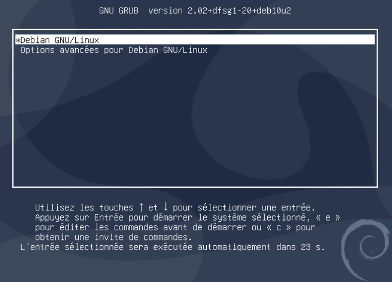
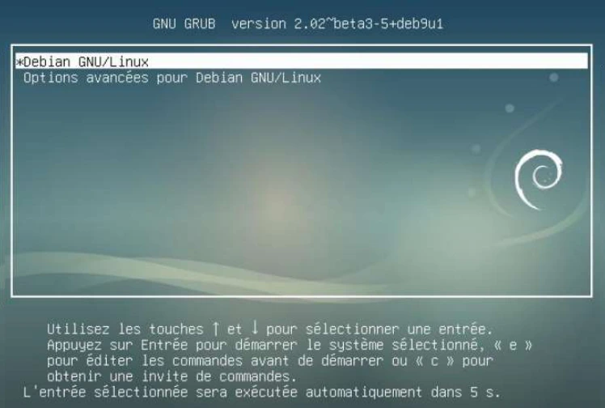
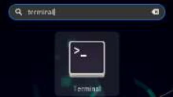
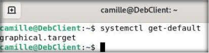
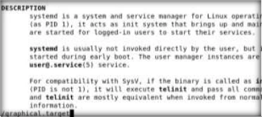
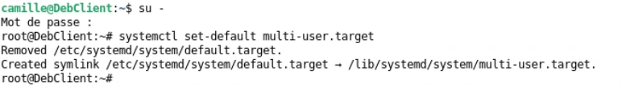
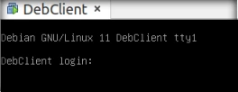
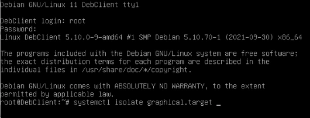
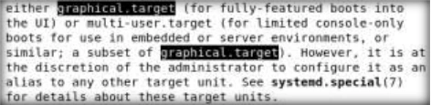

Module 03 — Démarrage d’une distribution Debian¶
La transcription du support Drive et l’aide pédagogique sont séparées pour rendre leur provenance explicite.
SOURCE DRIVE · TRANSCRIPTION DU SUPPORT
Le contenu des documents du dossier TSSR est transcrit ci-dessous, page par page. Les textes et tableaux sont intégrés à la page Web. Aucun fichier PDF, aucune diapositive entière ni aucune reproduction de page n’est affiché. Seuls des croquis ou visuels isolés et vérifiés peuvent accompagner la transcription. Les versions et les consignes restent celles des supports de formation. Les compléments IA sont conservés dans leur onglet distinct.
Support · RES24_0050B - M03 - Linux Administration (Debian) · 29 pages transcrites
Administration Debian
GNU/Linux
Module 03 – Démarrage d’une distribution Debian
Démarrage d’une distribution Debian
Objectifs
- Comprendre les diverses étapes de démarrage
- Apprendre à gérer le système et les services avec SystemD
- Arrêter ou redémarrer une machine Linux
Démarrer Debian Linux
Démarrage d’une distribution Debian
Démarrage de Linux,
services et niveaux
Chargeur d’amorçage (Boot Loader – BL)
1| BIOS 2| MBR 3| GRUB 4| Noyau 5| SystemD 5.1| Cible 2| MBR 3| GRUB 1| BIOS
Sous Debian, le chargeur est le programme GRUB2. Il se divise en plusieurs parties nommées stage. Après démarrage, le BIOS de la machine lance le chargeur d’amorçage. Stage 1 : dans le Master Boot Record (MBR), situé sur les 512 premiers octets du disque dur. Ce stage se contente de charger le suivant. Stage 1.5 : également localisé au début du disque dur contenant le Boot Loader, avant les données de la première partition Stage 2 : d’un point de vue Linux, la fin de GRUB est placée dans le répertoire /boot/grub/
Configuration de GRUB
1| BIOS 2| MBR 3| GRUB 4| Noyau 5| SystemD 5.1| Cible 2| MBR 3| GRUB 1| BIOS
- Le fichier de configuration de grub se trouve dans /boot/grub/grub.cfg
Il ne faut pas éditer ce fichier.
- Il est ainsi conseillé de procéder aux modifications de la configuration de GRUB à partir de :
- /etc/default/grub, contenant les paramètres et options globales
- scripts présents dans le dossier /etc/grub.d/
Configuration de GRUB
1| BIOS 2| MBR 3| GRUB 4| Noyau 5| SystemD 5.1| Cible 2| MBR 3| GRUB 1| BIOS
Pour la prise en compte de ces modifications, deux commandes permettent de regénérer le fichier /boot/grub/grub.cfg : grub-mkconfig et update-grub.
root@deb:~# update-grub
Création du fichier de configuration GRUB…
Image Linux trouvée : /boot/vmlinuz-4.19.0-12-amd64
Image mémoire initiale trouvée : /boot/initrd.img-4.19.0-12-amd64
Image Linux trouvée : /boot/vmlinuz-4.19.0-11-amd64
Image mémoire initiale trouvée : /boot/initrd.img-4.19.0-11-amd64
faitroot@deb:~# grub-mkconfig -o /boot/grub/grub.cfg
Création du fichier de configuration GRUB…
Image Linux trouvée : /boot/vmlinuz-4.19.0-12-amd64
Image mémoire initiale trouvée : /boot/initrd.img-4.19.0-12-amd64
Image Linux trouvée : /boot/vmlinuz-4.19.0-11-amd64
Image mémoire initiale trouvée : /boot/initrd.img-4.19.0-11-amd64
faitGRUB au démarrage
Selon la configuration de GRUB, il est possible de paramétrer l’affichage du menu au démarrage. Sera alors offerte la possibilité de sélectionner l’une des entrées qui y figurent afin de choisir un noyau ou un mode de démarrage particulier.


Le noyau Linux
1| BIOS 2| MBR 3| GRUB 4| Noyau 5| SystemD 5.1| Cible 2| MBR 3| GRUB 1| BIOS
- Le noyau (kernel) d’un système d’exploitation a pour but principal de mettre en relation le matériel (via le BIOS) et les interfaces utilisateurs et applications.
- Le kernel est dit modulaire, car il est constitué de plusieurs fichiers.
Application(s)
Shell
Noyau
Matériel
Fichiers du moyau
- Deux fichiers sont indispensables pour le démarrage minimum du système d’exploitation Debian :
- vmlinuz-4.19.0-12-amd64 : fichier principal du noyau avec sa version dans le nom.
- initrd.img-4.19.0-12-amd64:fichier secondaire généré à chaque mise à jour. Il contient la configuration spécifique au matériel et les options importantes du système d’exploitation (ex : gestion du raid, chiffrement, pilote des systèmes de fichiers, etc.)
root@deb:~# ls -l /boot/
total 72280
-rw-r--r-- 1 root root 206143 oct. 18 10:43 config-4.19.0-12-amd64
drwxr-xr-x 5 root root 4096 nov. 19 12:00 grub
-rw-r--r-- 1 root root 28097458 nov. 18 12:04 initrd.img-4.19.0-12-amd64
-rw-r--r-- 1 root root 3415048 oct. 18 10:43 System.map-4.19.0-12-amd64
-rw-r--r-- 1 root root 5278960 oct. 18 10:43 vmlinuz-4.19.0-12-amd64Relation GRUB / Noyau
- Lors du démarrage, on peut passer des paramètres au lancement du noyau par Grub.
- Pour cela, il faudra appuyer sur la touche « e » pour passer en mode édition.


Relation GRUB / Noyau
La ligne dans laquelle il est possible d’apporter des modifications est :
linux /vmlinuz-4.9.0-8-amd64 root=/dev/mapper/debian--vg-root ro
quiet- /vmlinuz-4.9.0-8-amd64 : nom de l’image noyau à charger.
- root=/dev/mapper/debian--vg-root : déclaration du système de fichier contenant la racine du système d’exploitation (/).
- ro : indique que la racine du système d’exploitation sera montée en lecture seule. Il est important de ne pas changer ce paramètre (si l’intégrité du système de fichier doit être vérifiée, celui-ci doit être en lecture seule).
- quiet : indique que le noyau se lancera de façon non verbeuse.
Démarrage de Linux, services et niveaux
Démo
BIOS, Grub et grub.cfg
Démarrage d’une distribution Debian
Gestion du système
avec SystemD
Le gestionnaire système : SystemD
1| BIOS 2| MBR 3| GRUB 4| Noyau 5| SystemD 5.1| Cible 2| MBR 1| BIOS
- System D est le gestionnaire système, le premier programme lancé par le noyau (PID 1).
- Il est en charge de lancer tous les programmes suivants afin d’obtenir un système opérationnel pour l’utilisateur.
- Le démarrage des programmes (services) est parallèle avec des dépendances entres services.
- La gestion des services est matérialisée dans des fichiers spécifiques au sein du dossier /lib/systemd/system.
Les cibles : SystemD
SystemD utilise des cibles (target) pour savoir quels sont les programmes à exécuter ou arrêter suivant l’objet de la cible.
| Nom de la cible | Objet de la cible | Equiv. SysV |
|---|---|---|
| poweroff.target | Arrêt du système | 0 |
| rescue.target | Passer en mode maintenance | 1 |
| multi-user.target | Système d’exploitation en mode console (CLI) avec session multi-utilisateur | 3 |
| graphical.target | Système d’exploitation en mode graphique (GUI) si installé | 5 |
| reboot.target | Redémarrage du système | 6 |
Repères du schéma de démarrage : 1 | BIOS → 2 | MBR → 3 | GRUB → 4 | Noyau → 5 | SystemD → 5.1 | Cible.
La commande systemctl
Une commande pour les gouverner tous : systemctl <action> [cible/service/unit] systemctl est LA commande par laquelle nous pourrons, entre autres :
- afficher la cible par défaut
- changer de cible par défaut
- changer de cible directement
- gérer les services
- lister les cibles, services, et autres éléments de SystemD
Gérer les cibles
Connaître la cible par défaut
root@deb:~# systemctl get-default
graphical.targetChanger la cible par défaut
root@deb:~# systemctl set-default multi-user.target
Removed /etc/systemd/system/default.target.
Created symlink /etc/systemd/system/default.target /lib/systemd/system/multi-
user.targetChanger de cible
root@deb:~# systemctl isolate rescue.targetLister les unités SystemD
Lister les divers éléments (units) de SystemD
root@deb:~# systemctl list-units
…
networking.service
loaded active exited Raise network interfaces
rsyslog.service
loaded active running System Logging Service
…
multi-user.target
loaded active active Multi-User System
network.target
loaded active active Network
…Lister tous les units
root@deb:~# systemctl list-units --all
getty-pre.target
loaded inactive dead Login Prompts (Pre)
getty.target
loaded active active Login Prompts
graphical.target
loaded inactive dead Graphical Interface
local-fs-pre.target
loaded active active Local File Systems (Pre)Gérer les services avec systemctl
Voir le statut d’un service
root@deb:~# systemctl status cron.service
● cron.service - Regular background program processing daemon
Loaded: loaded (/lib/systemd/system/cron.service; enabled; vendor preset: enabled)
Active: active (running) since Fri 2020-11-20 11:18:33 CET; 3h 29min ago
Docs: man:cron(8)
Main PID: 403 (cron)
Tasks: 1 (limit: 2327)
Memory: 1.1M
CGroup: /system.slice/cron.service
└─403 /usr/sbin/cron -fnov. 20 11:18:33 SRV-DEB-01 cron[403]: (CRON) INFO (Running @reboot jobs)
nov. 20 12:17:01 SRV-DEB-01 CRON[760]: pam_unix(cron:session): session opened for user root by
(uid=0)
nov. 20 12:17:01 SRV-DEB-01 CRON[761]: (root) CMD ( cd / && run-parts --report
/etc/cron.hourly)
nov. 20 12:17:01 SRV-DEB-01 CRON[760]: pam_unix(cron:session): session closed for user rootGérer les services avec systemctl
Démarrer un service
root@deb:~# systemctl start cron.service
root@deb:~# systemctl status cron.service
● cron.service - Regular background program processing daemon
Loaded: loaded (/lib/systemd/system/cron.service; enabled; vendor preset: enabled)
Active: active (running) since Fri 2020-11-20 16:58:53 CET; 2s ago
Docs: man:cron(8)
Main PID: 885 (cron)
Tasks: 1 (limit: 2327)
Memory: 488.0K
CGroup: /system.slice/cron.service
└─885 /usr/sbin/cron -fnov. 20 16:58:53 SRV-DEB-01 systemd[1]: Started Regular background program processing
daemon.
nov. 20 16:58:53 SRV-DEB-01 cron[885]: (CRON) INFO (pidfile fd = 3)
nov. 20 16:58:53 SRV-DEB-01 cron[885]: (CRON) INFO (Skipping @reboot jobs -- not system
startup)Gérer les services avec systemctl
Arrêter un service
root@deb:~# systemctl stop cron.service
root@deb:~# systemctl status cron.service
● cron.service - Regular background program processing daemon
Loaded: loaded (/lib/systemd/system/cron.service; enabled; vendor preset: enabled)
Active: inactive (dead) since Fri 2020-11-20 16:47:53 CET; 58s ago
Docs: man:cron(8)
Process: 403 ExecStart=/usr/sbin/cron -f $EXTRA_OPTS (code=killed, signal=TERM)
Main PID: 403 (code=killed, signal=TERM)Redémarrer un service
root@deb:~# systemctl restart cron.service
root@deb:~#Gérer les services avec systemctl
Activer un service
root@deb:~# systemctl enable networking
Synchronizing state of networking.service with SysV service script with
/lib/systemd/systemd-sysv-install.
Executing: /lib/systemd/systemd-sysv-install enable networking
Created symlink /etc/systemd/system/multi-user.target.wants/networking.service →
/lib/systemd/system/networking.service.
Created symlink /etc/systemd/system/network-online.target.wants/networking.service →
/lib/systemd/system/networking.service.Désactiver un service
root@deb:~# systemctl disable networking
Synchronizing state of networking.service with SysV service script with
/lib/systemd/systemd-sysv-install.
Executing: /lib/systemd/systemd-sysv-install disable networking
Removed /etc/systemd/system/network-online.target.wants/networking.service.
Removed /etc/systemd/system/multi-user.target.wants/networking.service.Gestion du système avec SystemD
Démo
La commande systemctl
Démarrage d’une distribution Debian
Arrêter / redémarrer le
système
La commande shutdown
root@deb:~# shutdown [-rhc] <heure> <message>Arrêter le système maintenant
root@deb:~# shutdown -h nowArrêter le système dans 10 minutes avec un avertissement
root@deb:~# shutdown -h +10 "Arrêt du serveur dans 10mn !"La commande shutdown
Redémarrer immédiatement
root@deb:~# rebootou
root@deb:~# shutdown -r nowRedémarrer le système à 16h30
root@deb:~# shutdown -r 16:30 "reboot à 16h30"La commande shutdown
- Annuler une commande shutdown en attente.
- Ne fonctionne pas avec l’option now ou une fois l’heure programmée atteinte.
root@deb:~# shutdown -cArrêter / redémarrer le système
TP Démarrer et arrêter Debian
Démo
Gérer les services
Conclusion
- Vous connaissez les principales étapes du démarrage de Debian GNU/Linux.
- Vous savez gérer les services et cibles SystemD.
- Vous savez arrêter ou redémarrer un ordinateur sous Linux.
Référence du document : 1yR1NXZJTL3Fb3MnLdA7XjOUn5nH97LhO · SHA-256 42936137889d5576…
Énoncé · M03TP01 - Enoncé - Démarrer et arrêter Debian · 1 pages transcrites
Administration Debian GNU/Linux
Démarrer et arrêter Debian
TP du Module 03 – Démarrage d’une distribution Debian
Avant de démarrer ce TP, il convient d’avoir suivi les vidéos des modules 1 à 3 et d’avoir réalisé les TP proposés.
Durée estimée
15 à 30 minutes
Énoncé : Identification & modification de la cible par défaut sur la station avec environnement graphique
- Démarrer le système, ouvrez une session avec votre utilisateur
- Quelle est la cible systemd qui sera atteinte par défaut au démarrage de la machine ?
- Dans le manuel de la commande systemd, rechercher le nom de la cible identifiée au point précédent. Lire le paragraphe correspondant et en déduire le nom de la cible permettant un démarrage normal SANS ENVIRONNEMENT GRAPHIQUE
- Définir comme cible par défaut la cible trouvée au point précédent.
- Redémarrer le poste avec environnement graphique. A l’issue du redémarrage, l’environnement graphique a-t-il été chargé ? Est-ce normal ?
- Exécuter la commande systemctl appropriée afin de charger l’environnement graphique.
Solution
Une solution est proposée pour ce TP sous la forme d'un PDF commenté, disponible dans les ressources à télécharger.
Référence du document : 13gVLkqE-ZMvWUjKgen3ABExTJx-4Gtpq · SHA-256 05cb0cd4aeb9ffa6…
Énoncé · M03TP02 - Enoncé - Gérer les services · 1 pages transcrites
Administration Debian GNU/Linux
Gérer les services
TP du Module 03 – Démarrage d’une distribution Debian
Avant de démarrer ce TP, il convient d’avoir suivi les vidéos des modules 1 à 3 et d’avoir réalisé les TP proposés.
Durée estimée
25 à 45 minutes
Enoncé : Gestion des services : sur le serveur sans environnement graphique
I. Gestion du service SSHD (connexions SSH)
Trouver les fichiers relatifs au fonctionnement du service (nom et emplacement) :
- Fichier de configuration systemd du service
- Démon ou fichier binaire du serveur ssh
- Fichier de configuration du serveur sshd
II. Gestion du service CRON (planification de tâches)
- Le service sera-t-il lancé automatiquement au démarrage de la machine ?
- Arrêter le service cron
- Redémarrer le serveur. Le service cron est-il actif après redémarrage
- Arrêter à nouveau le service manuellement
- Désactiver totalement le démarrage automatique du démon cron au démarrage du système.
Restaurer les paramètres par défaut de démarrage du démon cron
Solution
Une solution est proposée pour ce TP sous la forme d'un PDF commenté, disponible dans les ressources à télécharger.
Référence du document : 152MWaIvVdpo6ZRkcoJFJVv9_qVRhBWU9 · SHA-256 91a044e687a9ec63…
Correction · M03TP01 - Solution - Démarrer et arrêter Debian · 2 pages transcrites
Correction originale : à consulter après avoir tenté l’exercice.
Administration Debian GNU/Linux
Démarrer et arrêter Debian
TP du Module 03 – Démarrage d’une distribution Debian
Avant de démarrer ce TP, il convient d’avoir suivi les vidéos des modules 1 à 9 et d’avoir réalisé les TP proposés.
Durée estimée
15 à 30 minutes
Solution : Identification & modification de la cible par défaut : sur la station avec environnement graphique
- Démarrer le système, ouvrez une session avec votre utilisateur
Cliquez sur votre nom puis saisissez votre mot de passe
- Quelle est la cible systemd qui sera atteinte par défaut au démarrage de la machine ?
→ Ouvrir une fenêtre de terminal puis saisir la commande attendue
- Dans le manuel de la commande systemd, rechercher le nom de la cible identifiée au point précédent. Lire le paragraphe correspondant et en déduire le nom de la cible permettant un démarrage normal SANS ENVIRONNEMENT GRAPHIQUE





Transcription des commandes et informations utiles visibles
systemctl get-default
graphical.targetAdministration Debian GNU/Linux
→ man systemd puis recherche /graphical.target . Le résultat de cette recherche nous permet de remarquer le choix entre graphical.target et multi-user.target
- Définir comme cible par défaut la cible trouvée au point précédent.
Faire une élévation de droit puis saisir la commande systemctl avec ces paramètres
- Redémarrer le poste avec environnement graphique. A l’issue du redémarrage, l’environnement graphique a-t-il été chargé ? Est-ce normal ?
Après redémarrage, le mode multi-user par défaut nous offre un mode console
- Exécuter la commande systemctl appropriée afin de charger l’environnement graphique.
→ Ouvrir une session avec l'utilisateur root, saisir la commande systemctl isolate graphical.target




Transcription des commandes et informations utiles visibles
su -
systemctl set-default multi-user.target



Transcription des commandes et informations utiles visibles
systemctl isolate graphical.target


Référence du document : 1GaBj6qd0GXpphUYErc_GEcLltx6nHkM0 · SHA-256 ac79903da5e2dbe8…
Correction · M03TP02 - Solution - Gérer les services · 2 pages transcrites
Correction originale : à consulter après avoir tenté l’exercice.
Administration Debian GNU/Linux
Gérer les services
TP du Module 03 – Démarrage d’une distribution Debian
Avant de démarrer ce TP, il convient d’avoir suivi les vidéos des modules 1 à 3 et d’avoir réalisé les TP proposés.
Durée estimée
25 à 45 minutes
Solution : Gestion des services : sur le serveur sans environnement graphique
I. Gestion du service SSHD (connexions SSH)
Trouver les fichiers relatifs au fonctionnement du service (nom et emplacement) :
Ouvrir une session avec votre utilisateur standard
- Fichier de configuration systemd du service
- Démon ou fichier binaire du serveur ssh
Conf systemd ligne 'Loaded'
Binaire en ligne Process
- Fichier de configuration du serveur sshd find dans le dossier /etc qui contient les paramètres du système et de ses services
type f car nous cherchons un fichier, pas un dossier *sshd*conf* cherche un fichier dont le nom contient à la fois le nom du service et le mot conf, habituel dans des fichiers de ce type.

Transcription des commandes et informations utiles visibles
systemctl status sshd
# Unité : /lib/systemd/system/ssh.service
# Binaire : /usr/sbin/sshd

Transcription des commandes et informations utiles visibles
find /etc/ -type f -name "*sshd*conf*" 2>/dev/null
/etc/ssh/sshd_configAdministration Debian GNU/Linux
II. Gestion du service CRON (planification de tâches)
- Le service sera-t-il lancé automatiquement au démarrage de la machine ?
Lister les services avec systemctl puis filtrer sur le mot cron.
Le résultat montre un service activé
- Arrêter le service cron
Arrêt du service avec la commande systemctl stop.
Vérification du résultat avec systemctl status .
- Redémarrer le serveur. Le service cron est-il actif après redémarrage systemctl stop ne fait qu'arrêter un service temporairement. Le service est de nouveau actif après redémarrage du système
- Arrêter à nouveau le service manuellement
- Désactiver totalement le démarrage automatique du démon cron au démarrage du système
Désactivation d'un service au prochain démarrage avec l'option disable de systemctl
Restaurer les paramètres par défaut de démarrage du démon cron systemctl enable pour activer au démarrage, systemctl start pour démarrer manuellement le service sans devoir redémarrer le serveur.

Transcription des commandes et informations utiles visibles
systemctl enable cron.service
systemctl start cron
systemctl status cron
Transcription des commandes et informations utiles visibles
systemctl list-units | grep cron
Transcription des commandes et informations utiles visibles
systemctl stop cron.service
systemctl status cron.service
Transcription des commandes et informations utiles visibles
systemctl status cron.service
Transcription des commandes et informations utiles visibles
systemctl disable cron.service
Transcription des commandes visibles
systemctl stop cron.serviceRéférence du document : 1BqZRCFRK5I4Uo1i1LA6SNEZ9eveMWvVR · SHA-256 057a0c0c0b2745e7…
Complément IA / externe au cours — fiche pédagogique du portail
Cette fiche contient une reformulation et des aides d’apprentissage rédigées par IA. Elle est distincte de la transcription des documents du Drive et ne la remplace pas. Les schémas de synthèse de cette fiche sont des illustrations IA / externes au cours, sauf les captures explicitement attribuées à un document source.
Cours optimisé — reformulation pédagogique du support et des TP associés. Les exemples du parcours conservent leur contexte Debian 11 ; les corrections et actualisations sont identifiées comme compléments externes. Les transcriptions intégrales se consultent dans l’onglet Original.
Objectifs¶
- Décrire le passage du chargeur à systemd et aux cibles du système.
- Distinguer unité active, unité activée au démarrage et cible par défaut.
- Relever les fichiers de SSH et tester le comportement de cron avant et après redémarrage.
Comprendre le démarrage¶
Le support suit une machine BIOS avec MBR : firmware, chargeur GRUB, noyau Linux, initialisation, puis services et sessions. Ce scénario est un exemple d’architecture, pas l’unique chaîne d’amorçage possible. GRUB choisit une entrée, charge le noyau et l’image initiale, puis transmet des paramètres comme la racine du système.
Dans /boot, le support distingue vmlinuz (noyau), initrd (image initiale), System.map et config. Les suffixes correspondent aux versions installées. Une ligne GRUB comportant root=/dev/mapper/... ro quiet indique notamment le périphérique racine, le montage initial en lecture seule et la réduction des messages. En appuyant sur e, on modifie temporairement l’entrée sélectionnée ; il ne faut pas recopier le chemin du noyau d’une autre machine.
Systemd, PID 1 et unités¶
Après la phase noyau, systemd assure l’initialisation dans le scénario. Il est le processus PID 1. Les unités décrivent différents objets : services, cibles, montages ou timers. Les dépendances permettent de démarrer en parallèle ce qui peut l’être, avec un ordre lorsque celui-ci est nécessaire. Une cible rassemble des unités ; elle ne correspond pas à un programme unique.
| Cible étudiée | Rôle | Ancien repère numérique du support |
|---|---|---|
poweroff.target |
Arrêter la machine | 0 |
rescue.target |
Environnement de secours restreint | 1 |
multi-user.target |
Fonctionnement multiutilisateur sans bureau | 3 |
graphical.target |
Fonctionnement avec environnement graphique | 5 |
reboot.target |
Redémarrer | 6 |
Les nombres sont des compatibilités historiques avec les niveaux d’exécution ; ils n’épuisent pas toutes les cibles possibles.
Observer les unités et choisir une cible¶
list-units présente les unités chargées, avec une sélection dépendant des options. list-unit-files examine les fichiers d’unités et leur état d’activation : une ligne ne prouve donc pas que le service fonctionne actuellement.
La première commande définit la cible pour les prochains démarrages. La seconde bascule l’état courant et peut arrêter des unités ou sessions qui ne font pas partie de la nouvelle cible. Dans le TP, on relève la cible du poste graphique, on choisit multi-user.target, on redémarre pour observer la console, puis on charge le mode graphique. Revenir ensuite à la cible initiale si l’exercice le prévoit.
Distinguer fonctionnement et activation¶
Commande avec cron.service |
Effet |
|---|---|
systemctl status cron.service |
Lire l’état et des messages récents |
systemctl start cron.service |
Démarrer maintenant |
systemctl stop cron.service |
Arrêter maintenant |
systemctl restart cron.service |
Arrêter puis démarrer |
systemctl enable cron.service |
Préparer l’activation selon les liens de dépendance |
systemctl disable cron.service |
Retirer ces liens d’activation |
Arrêter cron ne désactive pas son prochain démarrage. Désactiver un service ne l’arrête pas forcément et ne bloque pas toute activation par dépendance ou manuelle. Pour le TP, observer ces deux axes séparément : is-active et is-enabled sont des contrôles pratiques supplémentaires.
Identifier le service SSH¶
Le TP demande le fichier d’unité, le binaire serveur et sa configuration. Sur Debian, le service usuel est ssh.service, avec sshd pour le démon et /etc/ssh/sshd_config pour la configuration. systemctl status ssh.service et systemctl cat ssh.service aident à examiner la machine réelle. Les unités fournies par les paquets peuvent apparaître sous /lib/systemd/system ou /usr/lib/systemd/system ; leurs surcharges locales relèvent de /etc/systemd/system.
Précision externe — activation et configuration
enable et disable concernent l’activation ; --now ajoute une action immédiate. Pour modifier un service, préférer une surcharge locale plutôt que le fichier livré par le paquet. Les états et chemins se vérifient sur la version utilisée. Référence : systemctl(1).
Arrêter et planifier un redémarrage¶
Le support présente également reboot et shutdown -r now. Vérifier les utilisateurs et les tâches en cours avant l’arrêt. shutdown -c annule un arrêt planifié encore en attente ; il ne revient pas sur un arrêt déjà réalisé.
TP 01 — Modifier la cible de démarrage du poste¶
Depuis la console, relever la cible initiale avec systemctl get-default et lire son rôle dans man systemd.special. Le TP demande ensuite un démarrage multi-utilisateur sans bureau.
systemctl get-default
sudo systemctl set-default multi-user.target
systemctl get-default
sudo systemctl reboot
Après redémarrage, vérifier que la console permet la connexion et que le bureau n’est pas lancé. Charger le bureau avec sudo systemctl isolate graphical.target et contrôler son apparition. isolate modifie la cible courante et peut arrêter des unités. Si le poste doit retrouver son démarrage initial, remettre la cible relevée au début du TP avec set-default.
TP 02 — Identifier SSH et tester cron au démarrage¶
Pour SSH, relever le chemin de l’unité, la commande qui lance le démon et le fichier de configuration du démon. Sur Debian, l’unité est généralement ssh.service, le démon sshd et la configuration serveur /etc/ssh/sshd_config.
systemctl show -p FragmentPath -p ExecStart ssh.service
systemctl cat ssh.service
dpkg -L openssh-server | grep -E '/sshd$|/sshd_config$'
systemctl is-enabled cron.service
systemctl is-active cron.service
- Arrêter cron avec
sudo systemctl stop cron.serviceet vérifier son état. Redémarrer la VM. S’il était activé au démarrage, observer qu’il repart après le redémarrage. - Arrêter à nouveau cron, puis désactiver son activation au démarrage avec
sudo systemctl disable cron.service. Vérifieris-enabledséparément deis-active. Si une autre unité déclenche cron, identifier la dépendance avant de conclure. - Restaurer l’état attendu dans le laboratoire. Si cron était actif et activé,
sudo systemctl enable --now cron.servicerétablit ces deux propriétés. Noter les états avant, pendant et après le TP.
Schéma explicatif — complément pédagogique¶
Illustration IA / externe au cours — schéma pédagogique de synthèse.
À retenir¶
Une cible par défaut règle les prochains démarrages. Une commande isolate agit sur l’état courant. L’activation de cron et l’exécution présente du service se contrôlent séparément.
Autoévaluation¶
set-defaultchange-t-il immédiatement la cible courante ?- Pourquoi cron redémarre-t-il après un simple
stopsuivi d’un reboot ? - Quelle commande distingue les fichiers d’unités des seules unités chargées ?
- Quelles sorties permettent de retrouver le fichier d’unité et la commande du service SSH ?
- Comment restaurer cron s’il était actif et activé au début du TP ?
Réponses commentées
- Non ;
isolateagit sur l’état courant. - Son activation au démarrage est restée configurée.
systemctl list-unit-files.systemctl show -p FragmentPath -p ExecStart ssh.servicedonne le chemin et la commande.systemctl cat ssh.serviceaffiche aussi les compléments d’unité.- Sur le serveur du TP, utiliser
sudo systemctl enable --now cron.service, puis vérifieris-enabledetis-active.
Pour travailler ce module¶
M03 — Démarrage d’une distribution Debian
20 questions
Teste tes connaissances sur ce module.